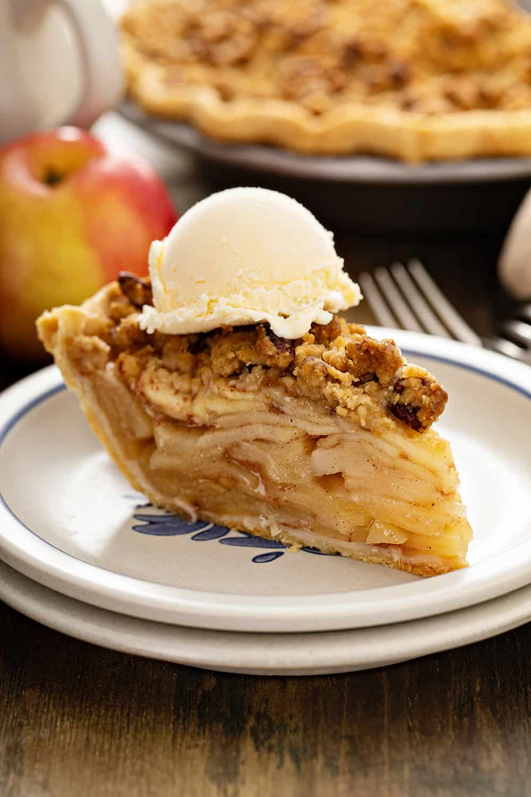
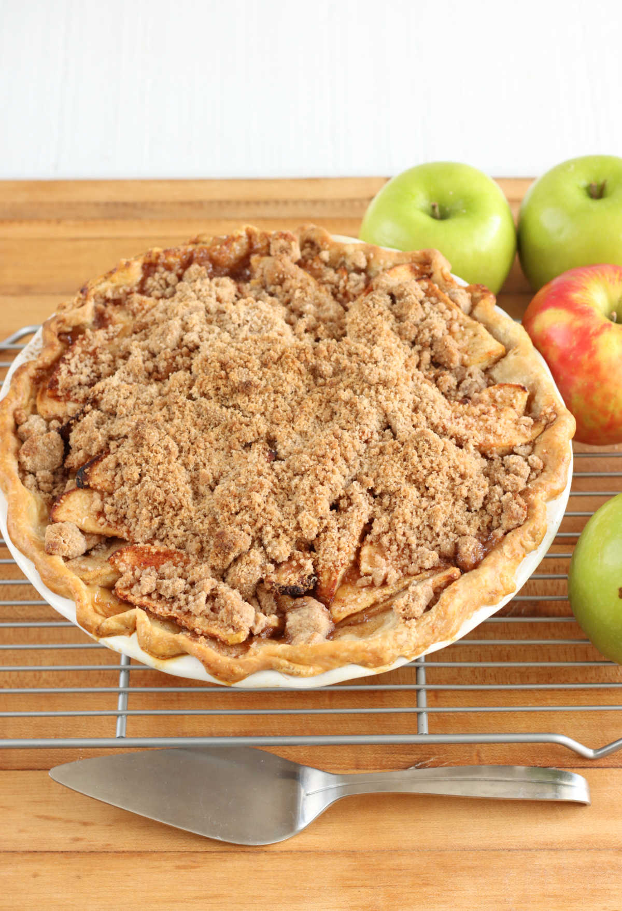
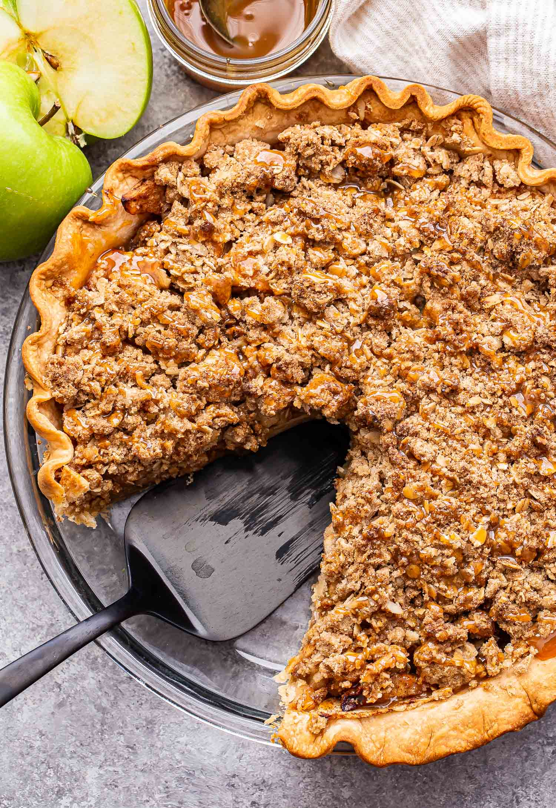

Home
Apple Crumble Pie



Description
Craving something warm, cozy, and sweet?
Our Apple Crumble Pie recipe brings together the comforting flavors of cinnamon-spiced apples and a golden buttery crumble topping. Perfect for holidays, family dinners, or just because!
Ingredients:
For the Filling:
- 6 cups apples (peeled, cored, and sliced thin)
- 1/2 cup granulated sugar
- 1 tsp ground cinnamon
- 1/4 tsp nutmeg (optional)
- 1 tbsp lemon juice
- 1 tbsp cornstarch
For the crumble Topping:
- 1/2 cup all-purpose flour
- 1/3 cup brown sugar
- 1/4 cup unsalted butter (cold, diced)
- Pinch of salt
Pie Base:
- 1 pre-made or homemade 9-inch pie crust
Steps:
- Preheat your oven to 375°F (190°C).
- Prepare apple filling: In a large bowl, mix sliced apples with sugar, cinnamon, nutmeg, lemon juice, and cornstarch.
- Place the mixture into the pie crust.
- the crumble topping: In a separate bowl, combine flour, brown sugar, and salt. Cut in the butter using fingers or a fork until crumbly.
- Sprinkle topping evenly over the apples.
- Bakefor 45–50 minutes until the top is golden and the filling is bubbling.
- Cool for at least 30 minutes before slicing. Best served warm with vanilla ice cream!